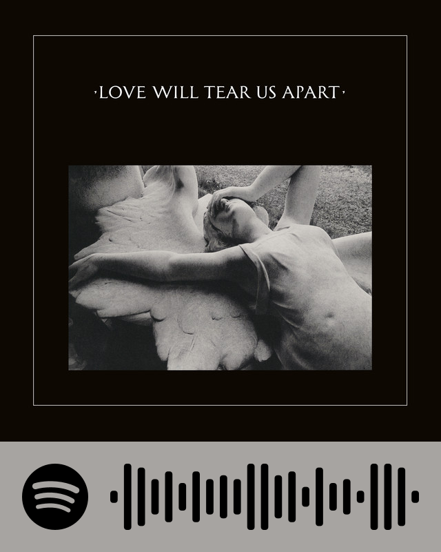
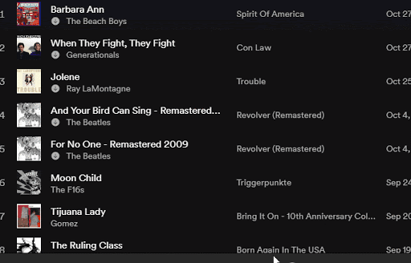

Bring Back Spotify Codes
Enter your Spotify URI here!

Where can I find the URI?

If you're on the New Desktop Experience you'll see that the sharing options in the context menu have been reduced to Copy Link and Copy embed code. You can still copy Spotify URIs if you hold down the modifier key (Alt/Ctrl) in the share menu: